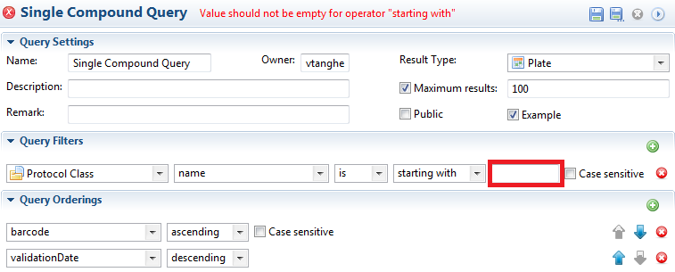

You can execute a query by clicking on the run button in the top right corner:
To check the validity and completeness of the constructed query, Phaedra will perform a set of built-in checks before the actual execution.
If a Query is not valid, it will not be executed and a red explanatory warning is shown in the top line, as can be seen on the next image:

If a query was constructed that takes too long to execute, you can always CANCEL it in the pop-up "Progress Information" window. e.g. "Give me all compounds not equal to 2"